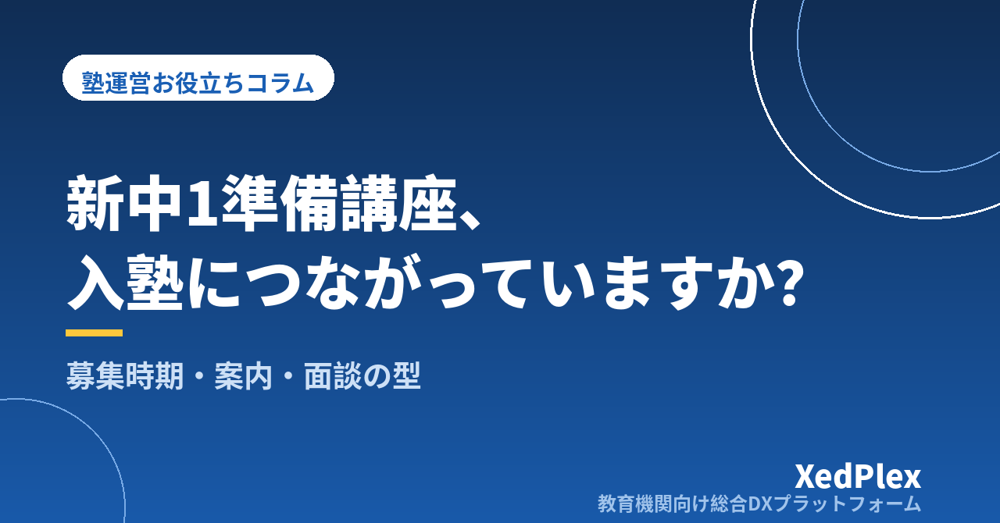

塾の新中1準備講座、いつ・何を・どう案内する？｜小6生の募集時期・講座の中身・保護者への案内と入塾につなげる段取り

冬期講習の準備が一段落したころ、ふと「今年の新中1準備講座、どうしよう」と思い出す。去年のチラシを引っ張り出して日付だけ直し、2月に慌てて配る。講座は好評だったのに、終わってみると入塾したのは数名だけ──。個人塾・小規模塾の塾長から、よく聞く流れです。
小学6年生の保護者にとって、中学進学は「勉強が難しくなる」「定期テストや内申が始まる」という不安が大きくなる時期です。塾にとっては、1年の中でも新しい家庭と出会いやすいタイミングのひとつと言えます。だからこそ、講座を「開くこと」ではなく「入塾につながる流れ」として設計しておくことが大切です。この記事では、新中1準備講座を毎年同じ型で回せるよう、逆算スケジュール、講座の中身と料金、保護者への案内、講座中の記録と最終日の面談までを整理します。
新中1準備講座が「やって終わり」になりやすい3つの理由
準備講座の内容そのものは良くても、入塾につながらない塾には共通点があります。
- 準備が遅い：案内を出す時期が遅く、近隣の塾が先に募集を始めている。保護者はすでに比較を終えていることもある
- 講座のゴールが決まっていない：「中学の予習をする」だけで、講座のあとに何を案内するかが決まっていない
- 参加者の記録が残っていない：講座中の様子をメモしておらず、最終日に保護者へ具体的な話ができない
これは冬期講習の講習生を入塾につなげるには？で解説した講習生の課題とよく似ています。準備講座も「講習の一種」として、講座前・講座中・最終日の段取りを決めておくと、毎年の負担がぐっと軽くなります。
11月から4月までの逆算スケジュール
新中1準備講座は、多くの塾で2月〜3月に実施されます。そこから逆算すると、11月〜12月は企画を固める時期にあたります。地域の中学校の入学式や、近隣の塾の動きに合わせて調整してください。
| 時期 | やること |
|---|---|
| 11月 | 昨年の参加者数・入塾者数・反省点を振り返る。対象・期間・定員・料金を決める |
| 12月 | 案内文・チラシ・ホームページの告知を作る。在塾生（小6）の家庭への先行案内を準備する |
| 12月〜1月 | 在塾生・紹介・問い合わせ履歴のある家庭へ先行案内。冬期講習の参加者にも案内する |
| 1月 | 一般募集を開始。申込の受付と、参加費の請求準備を進める |
| 2月〜3月 | 講座を実施。毎回の様子を記録し、最終回付近で保護者面談を行う |
| 3月下旬〜4月 | 入塾手続き・時間割の確定。入学後の定期テストに向けた最初の計画を立てる |
この流れを塾の年間事務カレンダーに一度書き込んでおけば、翌年は「去年の11月に何をしたか」を見るだけで準備を始められます。
講座の中身を決める：対象・期間・内容・料金
準備講座は「何でも教える」と時間が足りなくなります。中学に入ってからつまずきやすいところに絞り、「中学の勉強の進め方」を体験してもらう場と位置づけると、入塾後の通常授業にも自然につながります。
| 決める項目 | 考え方の例 |
|---|---|
| 対象 | 在塾の小6生と外部生を同じ講座にするか分けるか。外部生の受け入れ上限も決めておく |
| 期間・回数 | 週1〜2回を数週間など、家庭が通いやすい形にする。卒業式・入学準備の時期と重ならないよう注意 |
| 数学 | 正負の数や文字式の入口など、中1の最初の単元。小学校の計算の確認もあわせて行う |
| 英語 | アルファベットの読み書き、単語の書き取り、中1の最初の文法の入口など |
| 中学生活ガイダンス | 定期テスト・提出物・内申の仕組み、家庭学習の時間の目安などを保護者と一緒に説明する回を設ける |
| 料金 | 講座費・教材費を明示する。在塾生と外部生で扱いを変える場合も、ルールとして書いておく |
中学生活の説明では、ワークなどの提出物の管理が大きなテーマになります。説明の材料として塾で中学生の提出物をどう管理する？も参考にしてください。料金の決め方は個人塾の料金体系の決め方、講座費や教材費を月謝と分けて請求する考え方は塾の教材費・模試代・講習費の請求管理で解説しています。
募集と保護者への案内：伝える順番と項目
案内は「近い家庭から順番に」
案内を一斉に出すより、関係の近い家庭から順に届けるほうが、席の調整がしやすくなります。
- 在塾の小6生の家庭：準備講座が通常授業とどう違うのか、参加は必須かどうかを明確にする
- 在塾生のきょうだい・紹介の家庭：紹介をお願いする場合は、紹介で生徒を増やす仕組みの考え方も参考に
- 過去に問い合わせ・体験があった家庭：連絡してよいと確認できている家庭に限る
- 一般募集：チラシ・ホームページ・地図アプリのプロフィールなどで告知する
案内文に入れておきたい項目
- 講座の目的（中学の最初の単元と勉強の進め方を、入学前に体験する）
- 日程・時間・回数・定員、申込締切
- 講座費・教材費と支払い方法
- 講座後の流れ（希望者には面談を行い、4月からの通塾について案内すること）
- 問い合わせ・申込の方法と受付時間
「講座後に面談があり、通塾の案内をします」と最初から書いておくのがポイントです。最終日にいきなり入塾をすすめられると身構える保護者も、事前に知っていれば落ち着いて話を聞けます。チラシやホームページの見直しは塾のチラシ、反応がないときに見直す点、申込受付を混乱させないコツは季節講習の申込・請求管理を混乱させないコツで詳しく解説しています。
講座中の記録と最終日の面談で入塾につなげる
初回に今の学力を確かめ、毎回の様子を残す
外部生は、塾にとって初めて会う生徒です。初回に小学校の計算や英語の基礎を簡単に確認しておくと、講座の進め方を調整できるだけでなく、最終日の面談で「最初はここでつまずいていたが、ここまでできるようになった」と具体的に話せます。学力の把握の方法は塾の入塾時に生徒の学力・つまずきを把握する方法が参考になります。
毎回の記録は、次の3点を1〜2行で残すだけで十分です。
| 記録する項目 | 面談での使い方 |
|---|---|
| できたこと・つまずいたこと | 「中学で気をつけたい単元」として具体的に伝える |
| 取り組みの様子（集中・質問・宿題） | 家庭学習の習慣づくりのアドバイスにつなげる |
| 本人の発言・表情 | 「楽しそうに解いていました」など、保護者が知らない姿を伝える |
最終日の面談は「入塾のお願い」ではなく「中学最初の3か月の提案」
面談では、講座の記録をもとに、入学から最初の定期テストまでに何をするとよいかを提案します。そのうえで、通塾する場合のコース・曜日・料金を案内し、返事の期限と、入塾する場合の手続きの流れを伝えます。その場で決めてもらう必要はありません。家庭で考える時間を確保することが、かえって信頼につながります。
入塾が決まったら、4月以降の最初の1か月が定着の分かれ目です。入塾後1か月のフォローで早期退塾を防ぐの手順、在塾生の学年切り替えは塾の新年度準備チェックリストもあわせて確認しておきましょう。体験から入塾までの流れ全体は体験授業から入塾につながらない塾の共通点で整理しています。
まとめ：準備講座は「11月の企画」で結果が決まる
新中1準備講座を入塾につなげるために必要なのは、派手な宣伝ではありません。11月に企画を固め、近い家庭から順に案内し、講座の目的と講座後の面談を最初から伝え、講座中の記録をもとに「中学最初の3か月」を提案する。この流れを型にしておけば、毎年の準備は「去年の型をなぞって直すだけ」になります。
まずは、昨年の準備講座の参加者のうち何名が入塾したか、なぜ入塾しなかった家庭があったのかを振り返るところから始めてみてください。記録が残っていなければ、今年はそれを残すことが最初の改善になります。
この記事を書いた運営より
私たちは、個人経営・小規模の学習塾向けに、生徒管理・QRコードでの入退室記録・月次請求・保護者へのLINE/メール通知・AIによる学習支援までをひとつにまとめた教育機関向け総合DXプラットフォーム「XedPlex（ゼドプレックス）」を開発・提供しています。初期費用は0円、料金は生徒1名あたり月額300円（税込）から。生徒50名の塾なら月15,000円（税込）です。全国8つの教室で導入されており、導入塾には紹介ホームページの無料作成も行っています。機能の詳細説明はこちら。
XedPlexの詳細を見る